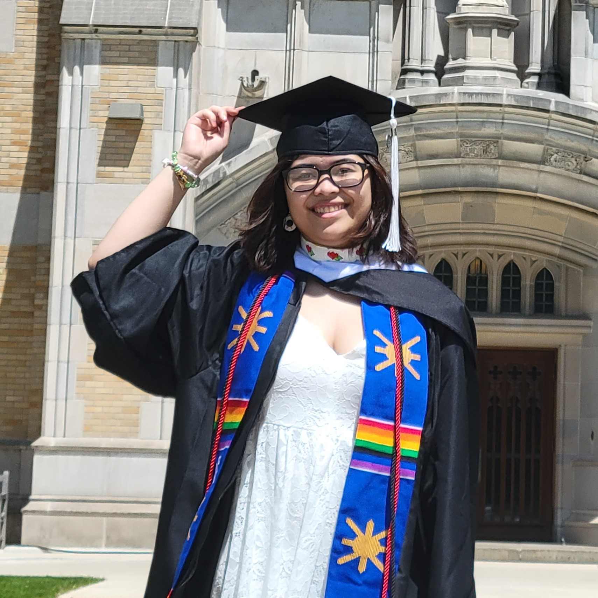
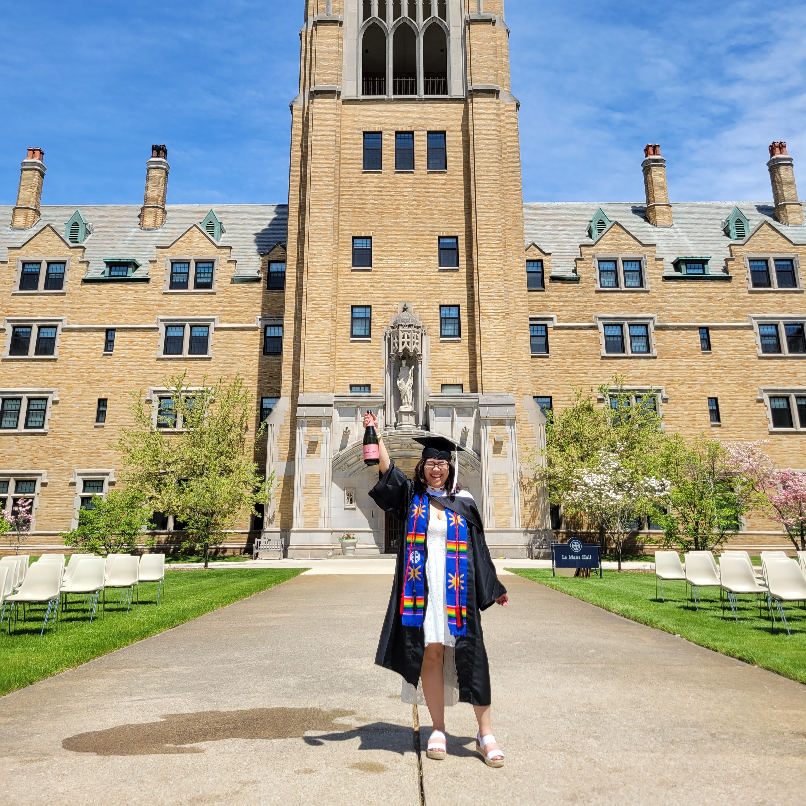

My undergrad life at Saint Mary's College (SMC)

So, my college life interesting. The most memorable were the pictures at the end! I studied English Literature, focusing on Ancient and Medieval Literature, and Victorian British literature. I did my senior comprehension essay and presentation on Charles Dickens' Little Dorrit, Jane Austen's Mansfield Park, and Charlotte Bronte's Jane Eyre. It was a combination of women in literature, Victorian literature, and clothing. I used clothing to describe impressions, treatment, and assumptions made in society, especially concerning women.
It was overall an interesting experience, going so far away from home after having never left home before. Making and losing friends, talking with professors, taking the courses I wanted to take and needed to take. Not being able to bring my sweet dog with me was a bit painful. Being forced to interact with my peers caused some heartache and headaches, but I certianly did learn alot about social interactions. I do still struggle with asking blunt questions in a non-offensive way though.